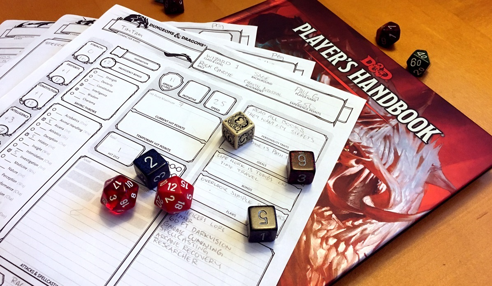
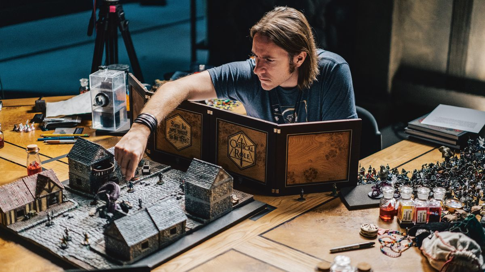

Começando em Dungeons & Dragons?

Dungeons & Dragons é um jogo de intepretação, onde histórias são contadas em mundos de espada e feitiçaria. Como em jogos de faz de conta, ele é conduzido pela sua imaginação.
“Vocês seguiram o caminho ao lado do rio, ao sairem da floresta vocês conseguem avistar um castelo em ruínas. Esse castelo é feito de pedras escuras, muitas das suas construções desmoronaram e pássaros negros podem ser visto voando sobre o castelo. O que vocês fazem?”
Com uma breve descrição pode ser o suficiente para sua imaginação aflorar, fazendo assim o número de histórias que podem ser criadas serem enormes.
Em sua essência, D&D é um jogo com foco narrativo. Os dados são apenas auxiliares. Todas as decisões são tomadas por você, desde sua aparência, como você age e até o que acontece a seguir.
As criações coletivas presentes em seu jogo de D&D constroem a história que você e seu grupo de amigos lembraram para sempre, desde acontecimentos lendários a incidentes absurdos que o farão rir anos depois. Pois a principal regra do D&D é se divertir.
Papel dos Jogadores
Quando joga D&D, você assume o papel de um aventureiro, que pode ser um guerreiro habilidoso, um clérigo devoto, um druida defensor da natureza, um ladino letal ou um mago poderoso.
Seu primeiro passo é imaginar seu próprio personagem. Cada ficha de personagem é mais do que uma combinação de números, opções de raças e classes. Você cria a história, personalidade e relacionamentos de seu personagem.
Ao abordar estes diferentes aspectos que o personagem tem, o jogador pode dar a vida a um personagem único que vai servir como seu representante no jogo.
Com alguns amigos e um pouco de imaginação, você parte em grandes jornadas e aventuras arriscadas, conhecendo o mundo e as pessoas que ali vivem, e também podendo testar-se contra uma variedade de desafios e monstros sanguinários.
O jogo não tem final real; quando uma história ou missão termina, outra pode começar, criando uma história corrente chamada campanha. Muitas pessoas que jogam D&D mantém suas campanhas rolando por meses ou anos, encontrando com os amigos toda semana para continuar a história de onde parou.
Papel do Dungeon Master
Um jogador assume o papel de Dungeon Master, o juiz e narrador do jogo. O DM é responsável pela aventura, enquanto os personagens navegam pelos perigos da aventura e decidem onde explorar.
O DM pode descrever a entrada do Castelo Negro em ruínas e os jogadores decidem o que querem que seus aventureiros façam:
Será que eles vão avançar bravamente rumo ao portão destruído?
Tentarão se esgueirar para evitar que alguém que possa estar vigiando na muralha?
Dar a volta no castelo procurando entradas secretas?
Conjurar uma magia para ficarem invisíveis?
O DM determina os resultados das ações dos aventureiros e narra o que os personagens vivenciam. Como o DM pode improvisar para reagir a tudo que os jogadores tentarem, D&D é infinitamente flexível e cada aventura pode ser empolgante e inesperada.